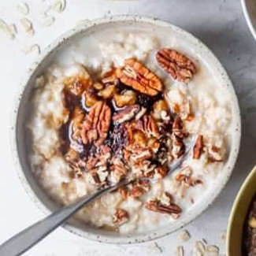
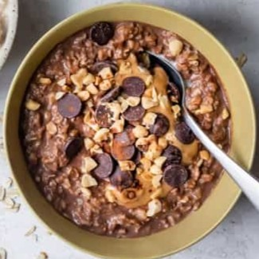
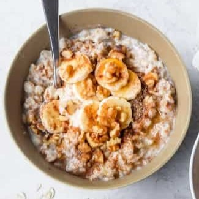

Quick Cook Oatmeal

Ingredients:
- Base Recipe
- ½ cup rolled oats
- 1 cup water
- Pinch salt
- 2-3 tbsp milk of choice
- Strawberry
- ½ cup strawberries sliced
- 1 tbsp half and half
- 2 tsp honey
- ⅛ tsp vanilla extract
Cooking Instructions:
- Microwave
- Combine oats, water, and salt in a bowl.
- Microwave on high for 90 seconds.
- Add milk and stir.
- Stovetop
- Boil water in a small saucepan.
- Add oats and simmer 5 minutes.
- Add milk and let sit 2-3 minutes.
Assembly:
- Stir in toppings and let cool slightly.
- Adjust milk for texture.
- Serve warm.
Video Instruction
Resources:
- YouTube
- Feel Good Foodie
Health Benefits of Oatmeal
Oatmeal is high in fiber and promotes digestion, lowers cholesterol, and provides sustained energy.
Tasty Topping Ideas
Try adding fruits, nuts, seeds, honey, maple syrup, or cinnamon to enhance both taste and texture!
Why I Love Oatmeal
Oatmeal is one of the easiest and healthiest meals you can make. It's warm, comforting, and perfect for any time of the day. With endless toppings, you’ll never get bored!
It’s rich in nutrients and keeps you full for longer. Whether you like it sweet or savory, there’s always a way to make your oatmeal delicious. Add fruits, nuts, or even peanut butter!
Oatmeal Gallery


